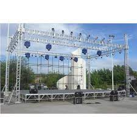

Top Tools/Equipements

Controller
Buy
DJ controllers are devices used to help DJs mix music with DJ software using knobs, encoders,
jog wheels, faders, backlit buttons, touch strips, and other components.

Mixer
Buy
A DJ mixer is a type of audio mixing console used by disc jockeys (DJs) to control
and manipulate multiple audio signals. Some DJs use the mixer to make seamless
transitions from one song to another when they are playing
records at a dance club.

Headphone
Buy
Often they are used for serious music listening, in studios, for audio and video editing and many other applications.
They are also used for music on the go, and can often be used with a wireless connection, i.e. wireless headphones
/ Bluetooth headphones, where the lack of a connecting lead makes them easier to use.

Turntable
Buy
A digital turntable used by disc jockeys (DJs) who orchestrate prerecorded music for parties and events.
The devices are CD players that have a slip pad disc like a platter on an analog turntable.

Sounds
Buy
DJ (Disc Jockey) is extremely important to the music Industry. They directly play music in front
of the audience and interact with them on a regular basis than other type of musicians. ...
A professional DJ must have knowledge of different music genres, know how
to combine and mix the different types of music numbers.

Led
Buy
The main types of DJ lights that you can get are headlights, laser beam light displays,
disco balls, and even screw-in bulbs. You can choose which style you want based on the type of music
you're playing. Laser displays are much more expensive but they're fun
for large events.

Sharpy
Buy
The main types of DJ lights that you can get are headlights, laser beam light displays,
disco balls, and even screw-in bulbs. You can choose which style you want based on the type of music
you're playing. Laser displays are much more expensive but they're fun
for large events.

Struss
Buy
We can make good quality truss as per requirement of our client. This trusses are used for
Sound, Light, Exhibition, Stage Shows, Fashion Shows, Decoration, D